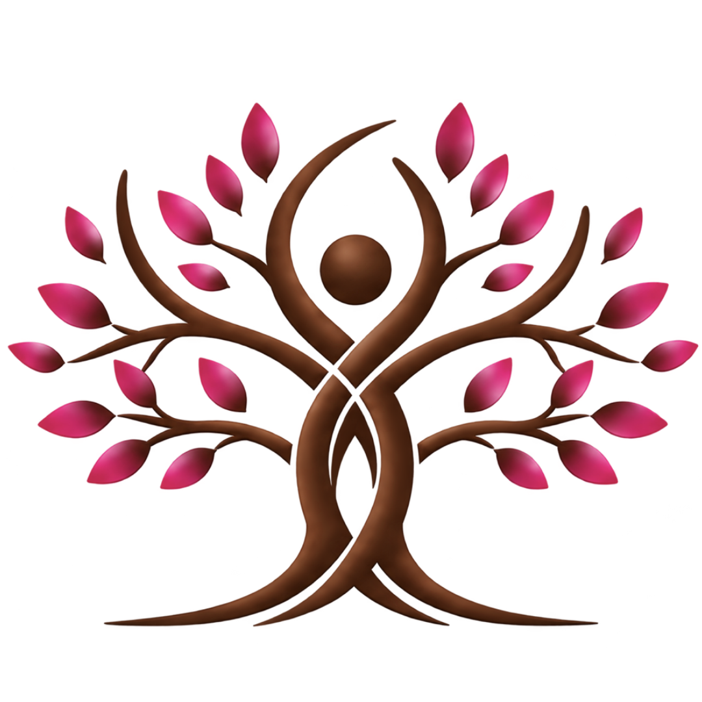

In focus
From fog to focus.
When everything feels cloudy, the first step is not pressure. It is clarity. We slow the noise, organize what matters, and find a practical way forward.
Follow the pathway
GratitudeOne-on-one coaching & wellbeing
Think right. Feel good. Live well.
For people ready to move from overwhelm, uncertainty, and self-doubt into clarity, confidence, and meaningful change.
Where are you today?
In focus
When everything feels cloudy, the first step is not pressure. It is clarity. We slow the noise, organize what matters, and find a practical way forward.
Follow the pathwayA shift in perspective
Yesterday I was clever. That is why I wanted to change the world. Today I am wise. That is why I am changing myself.
Today I Am Wise, Sri Chinmoy, 1982
Ways to work together
Every path is personal. The work is focused, practical, and built around what is actually happening now.
Personal support for emotional clarity, confidence, habits, and life direction.
Support with routines, mindset, presence, stress, balance, and sustainable positive change.
Guidance for career decisions, job hunting, interviews, workplace confidence, and growth.
Age-aware support for early teens, students, and young adults navigating pressure, identity, and change.
Who we help
Find the first clear thought.
Make choices that feel like yours.
Build confidence without pretending.
Turn fear into a smaller next step.
Move with purpose, not panic.
About Gratitude
When people feel safe, seen, and supported, they can move through fear, develop clarity, and build habits that create lasting positive change.
This is a partnership: warm enough to be human, practical enough to move life forward, and grounded in ownership of what comes next.
Begin a conversationThe next move is yours
Start with a simple conversation. Share what brings you here and we will explore what useful support could look like.
Good to know
Gratitude offers coaching and wellbeing support, not therapy or medical treatment. Coaching focuses on perspective, goals, habits, choices, and practical ways forward.
Individuals, early teens, students, young adults, and people navigating change, anxiety, career questions, confidence, comparison, or a sense of being stuck.
We begin with what is most present for you, then use thoughtful questions, reflection, practical planning, and realistic actions to move forward.
Yes. Support is shaped around age, context, and individual needs. Appropriate parent or guardian involvement will be discussed for minors.
Yes. Career coaching can clarify direction, organize a job search, prepare for interviews, communicate strengths, and grow workplace confidence.
Use the form above to share your details and preferred support. Gratitude will follow up to arrange a suitable time and explain the next steps.
Think right.
Feel good.
Live well.